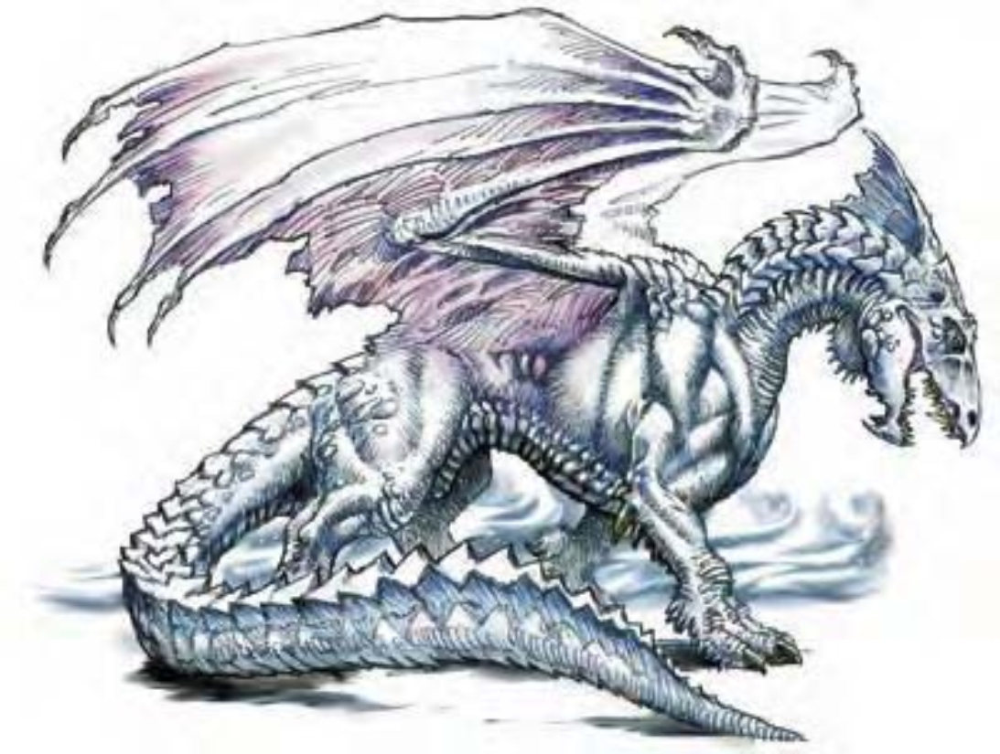

鼻如喙、喉生刺、冠接脊骨。淡淡的清爽香气围绕，鳞片似雪。
白龙属于龙类里面体型最小、智力最低的一类。大多数白龙只是野兽般的掠食者，从脸就可以看的出来头脑简单，性情凶猛，不像其他龙类那样聪明和强大。
雏龙的鳞片像镜子般闪耀，随着年龄光辉会逐渐消失。极老龙的鳞片为淡蓝色、淡灰色及白色混杂在一起。
白龙巢穴通常是地底深处的冰穴，远离暖和的阳光。会将所有宝藏都存放在巢穴里，尤其是被冰块包围的洞穴，因为里面可以反射宝石的光芒。白龙特别喜爱钻石。
白龙几乎能吃下任何东西，但奇怪的是只吃冷冻食物。在用喷吐攻击杀死猎物之后，通常会趁尸体还没被冻的硬梆梆的时候吃掉。剩下的食物会埋在雪堆里，等冻的差不多的时候再吃。
霜巨人是白龙的天敌，会以白龙为食或是拿来做盔甲，甚至捕捉白龙当作守卫。
白龙的环境与社群环境：寒冷带山脉。
组织：雏龙、幼龙、少年龙、青少年龙和青年龙：单独或数尾 (2-5)；成年龙、壮年龙、老年龙、极老龙、古龙、上古龙或太古龙：单独、成双或一家 (1-2，加上2-5个后代)。
挑战级数：雏龙2、幼龙3、少年龙4、青少年龙6、青年龙8、成年龙10、壮年龙12、老年龙15、极老龙17、古龙18、上古龙19、太古龙21。
宝藏：三倍标准。
阵营：总是混乱邪恶。
进化：雏龙4-5HD；幼龙7-8HD；少年龙10-11HD；青少年龙13-14HD；青年龙16-17HD；成年龙19-20HD；壮年龙22-23HD；老年龙25-26HD；极老龙28-29HD；古龙31-32HD；上古龙34-35HD；太古龙37+ HD。
等级修正值：雏龙+2；幼龙+3；少年龙+3；青少年龙+5；其余无。
| 资料栏位 | 少年白龙 (Young White Dragon) 中型龙 (寒系) |
| 生命骰 | 9d12+18 (76HP) |
| 先攻 | +4 |
| 速度 | 60英尺 (12格)、遁地30英尺、飞行200英尺 (不良)、游泳60英尺 |
| 防御等级 | 18 (+8天生)、接触10、措手不及18 |
| 基本攻击/擒抱 | +9 / +11 |
| 攻击 | 啮咬+11近战 (2d6+2) |
| 全力攻击 | 啮咬+11近战 (2d6+2) 及 2爪抓+6近战 (1d6+1) 及 2翼击+6近战 (1d4+1) |
| 占据/触及 | 5英尺 / 5英尺 |
| 特殊攻击 | 喷吐攻击 |
| 特殊能力 | 黑暗视觉120英尺、冰上行走、对寒冷/“睡眠术”/麻痹免疫、昏暗视觉、易受火焰伤害 |
| 豁免 | 强韧+8、反射+6、意志+6 |
| 属性 | 力量15、敏捷10、体质15、智力6、感知11、魅力6 |
| 技能与专长 | 威吓+10、聆听+12、搜索+12、侦察+12 专长：空袭、精通先攻、精通天生武器 (啮咬)、翻转 |
| 环境/阵营/CR | 寒冷带山脉 / 总是混乱邪恶 / 挑战级数：4 |
白龙喜欢突袭，从高处俯冲下来或是由水面、雪里或冰层下面猛然出现。先使用喷吐攻击，再一一打倒对手。
喷吐攻击 (超自然)：白龙只有一种喷吐攻击，射出锥状寒气。少年龙：30英尺锥状，3d6点寒冷伤害，通过反射检定 (DC=16) 则伤害减半。
冰上行走 (特异)：如同“蛛行术”，但是只能攀爬冰面。此能力持续生效。
“冻寒雾气” (类法术能力)：老年龙或更老的白龙每天可以使用此能力三次，效果如同“重雾术”，但是接触到雾气的物体表面都会结冰，产生如同“油腻术”的效果。白龙具有冰上行走能力，不受油腻效果影响。此能力等同五级法术。
其他类法术能力：每天3次――“云雾术” (青少年龙或更老的龙)、“造风术” (成年龙或更老的龙)、“冰墙术” (古龙或更老的龙)；每天1次――“操控天气” (太古龙)。
技能：“躲藏”、“潜行”、和“游泳”为白龙的本职技能。
| 年龄层 | 体型 | 生命骰 (HP) | 力 | 敏 | 体 | 智 | 感 | 魅 | 基本攻击 / 擒抱 | 基本攻击 | 强韧 | 反射 | 意志 | 喷吐攻击 (DC) | 威势DC |
|---|---|---|---|---|---|---|---|---|---|---|---|---|---|---|---|
| 雏龙 | 微 | 3d12+3 (22) | 11 | 10 | 13 | 6 | 11 | 6 | +3 / -5 | +5 | +4 | +5 | +3 | 1d6 (12) | ― |
| 幼龙 | 小 | 6d12+6 (45) | 13 | 10 | 13 | 6 | 11 | 6 | +6 / +3 | +8 | +6 | +5 | +5 | 2d6 (14) | ― |
| 少年龙 | 中 | 9d12+18 (76) | 15 | 10 | 15 | 6 | 11 | 6 | +9 / +11 | +11 | +8 | +6 | +6 | 3d6 (16) | ― |
| 青少年龙 | 中 | 12d12+24 (102) | 17 | 10 | 15 | 8 | 11 | 8 | +12 / +15 | +15 | +10 | +8 | +8 | 4d6 (18) | ― |
| 青年龙 | 大 | 15d12+45 (142) | 19 | 10 | 17 | 8 | 11 | 10 | +15 / +23 | +18 | +12 | +9 | +9 | 5d6 (20) | 17 |
| 成年龙 | 大 | 18d12+72 (189) | 23 | 10 | 19 | 10 | 11 | 12 | +18 / +28 | +23 | +15 | +11 | +11 | 6d6 (23) | 20 |
| 壮年龙 | 超大 | 21d12+105 (241) | 27 | 10 | 21 | 12 | 13 | 12 | +21 / +37 | +27 | +17 | +12 | +13 | 7d6 (25) | 21 |
| 老年龙 | 超大 | 24d12+120 (276) | 29 | 10 | 21 | 12 | 13 | 12 | +24 / +41 | +31 | +19 | +14 | +15 | 8d6 (27) | 23 |
| 极老龙 | 超大 | 27d12+162 (337) | 31 | 10 | 23 | 14 | 15 | 14 | +27 / +45 | +35 | +21 | +15 | +17 | 9d6 (29) | 25 |
| 古龙 | 超大 | 30d12+180 (375) | 33 | 10 | 23 | 14 | 15 | 14 | +30 / +49 | +39 | +23 | +17 | +19 | 10d6 (31) | 27 |
| 上古龙 | 巨 | 33d12+231 (445) | 35 | 10 | 25 | 14 | 15 | 16 | +33 / +57 | +41 | +25 | +18 | +20 | 11d6 (33) | 29 |
| 太古龙 | 巨 | 36d12+288 (522) | 37 | 10 | 27 | 18 | 19 | 18 | +36 / +61 | +45 | +28 | +20 | +24 | 12d6 (36) | 32 |
| 年龄层 | 速度 | 先攻权 | 防御等级 | 特殊能力 | 施法者等级 | SR |
|---|---|---|---|---|---|---|
| 雏龙 | 60英尺、遁地30英尺、飞行150英尺 (普通)、游泳60英尺 | +0 | 14 (+2体型、+2天生)、接触12、措手不及14 | 冰上行走、对寒冷免疫、易受火焰伤害 | ― | ― |
| 幼龙 | 60英尺、遁地30英尺、飞行150英尺 (普通)、游泳60英尺 | +0 | 16 (+1体型、+5天生)、接触11、措手不及16 | 冰上行走、对寒冷免疫、易受火焰伤害 | ― | ― |
| 少年龙 | 60英尺、遁地30英尺、飞行200英尺 (不良)、游泳60英尺 | +0 | 18 (+8天生)、接触10、措手不及18 | 冰上行走、对寒冷免疫、易受火焰伤害 | ― | ― |
| 青少年龙 | 60英尺、遁地30英尺、飞行200英尺 (不良)、游泳60英尺 | +0 | 21 (+11天生)、接触10、措手不及21 | “云雾术”、冰上行走、对寒冷免疫、易受火焰伤害 | ― | ― |
| 青年龙 | 60英尺、遁地30英尺、飞行200英尺 (不良)、游泳60英尺 | +0 | 23 (-1体型、+14天生)、接触9、措手不及23 | 伤害减免5 / 魔法 | ― | 16 |
| 成年龙 | 60英尺、遁地30英尺、飞行200英尺 (不良)、游泳60英尺 | +0 | 26 (-1体型、+17天生)、接触9、措手不及26 | “造风术” | 1级 | 18 |
| 壮年龙 | 60英尺、遁地30英尺、飞行200英尺 (不良)、游泳60英尺 | +0 | 28 (-2体型、+20天生)、接触8、措手不及28 | 伤害减免10 / 魔法 | 3级 | 20 |
| 老年龙 | 60英尺、遁地30英尺、飞行200英尺 (不良)、游泳60英尺 | +0 | 31 (-2体型、+23天生)、接触8、措手不及31 | “冻寒雾气” | 5级 | 21 |
| 极老龙 | 60英尺、遁地30英尺、飞行200英尺 (不良)、游泳60英尺 | +0 | 34 (-2体型、+26天生)、接触8、措手不及34 | 伤害减免15 / 魔法 | 7级 | 23 |
| 古龙 | 60英尺、遁地30英尺、飞行200英尺 (不良)、游泳60英尺 | +0 | 37 (-2体型、+29天生)、接触8、措手不及37 | “冰墙术” | 9级 | 24 |
| 上古龙 | 60英尺、遁地30英尺、飞行250英尺 (笨拙)、游泳60英尺 | +0 | 38 (-4体型、+32天生)、接触6、措手不及38 | 伤害减免20 / 魔法 | 11级 | 25 |
| 太古龙 | 60英尺、遁地30英尺、飞行250英尺 (笨拙)、游泳60英尺 | +0 | 41 (-4体型、+35天生)、接触6、措手不及41 | “操控天气” | 13级 | 27 |
| * 亦可施展牧师法术及混乱、邪恶与火领域的法术，均视为秘法术。 | ||||||